Loco ASBL
Vidéo promotionnelle
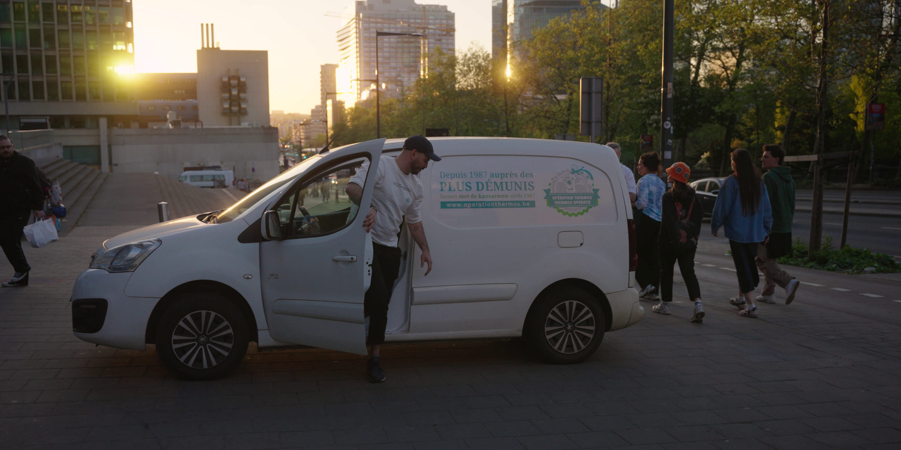
Nous avons réalisé une vidéo promotionnelle sur le projet de récupération des invendus dans les cantines scolaires afin de répondre à l'augmentation de la demande alimentaire à Bruxelles.
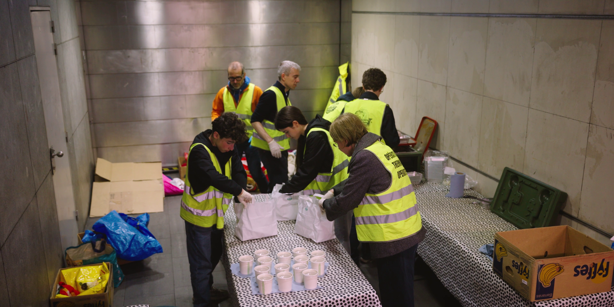
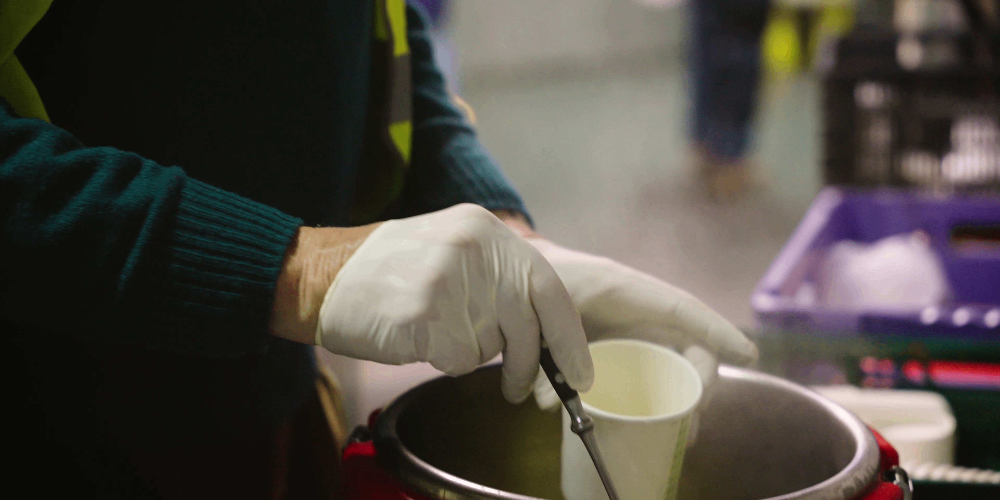
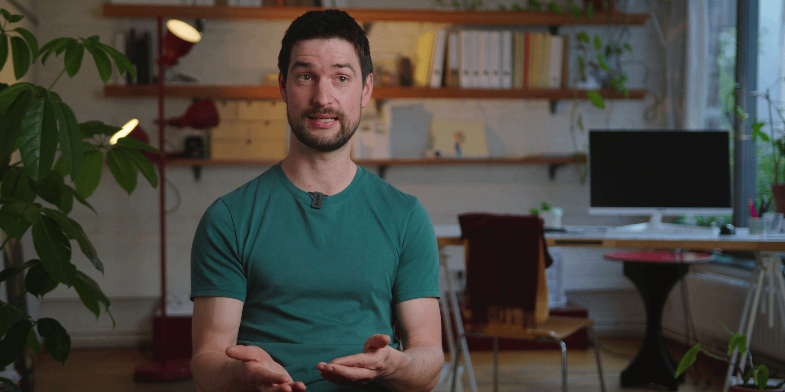
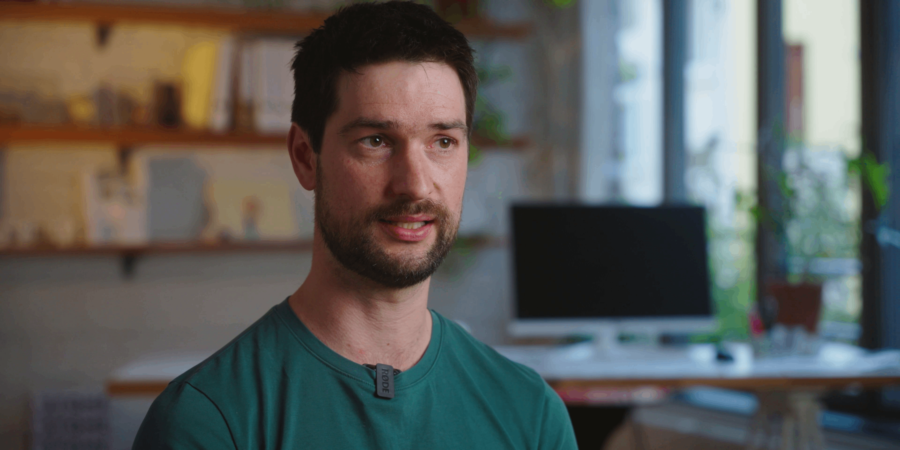
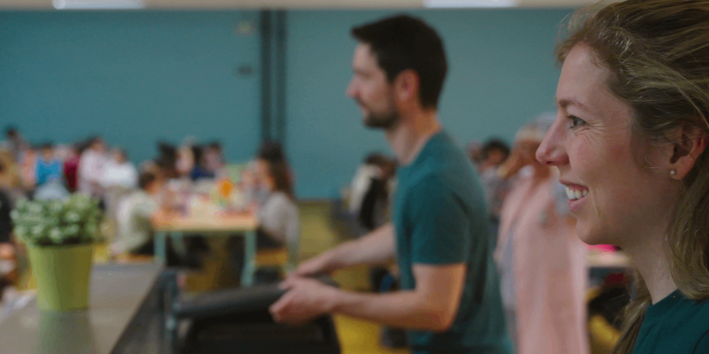
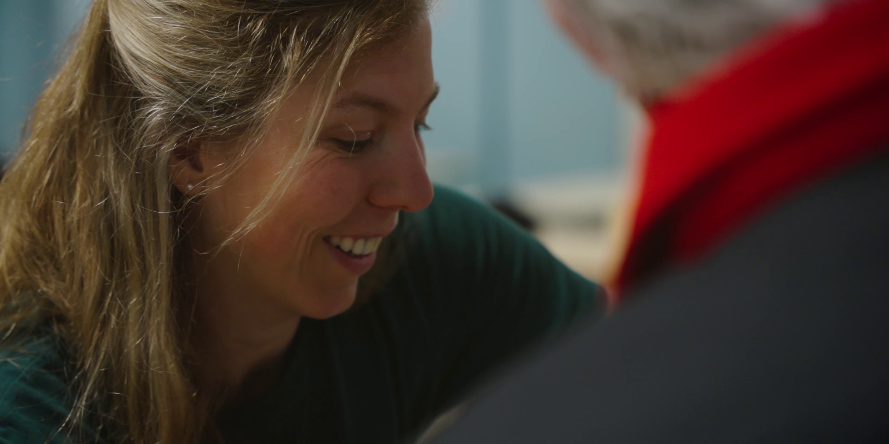
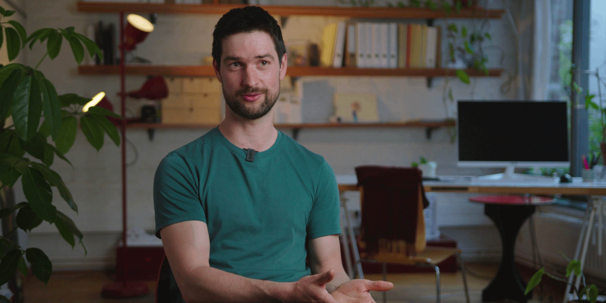
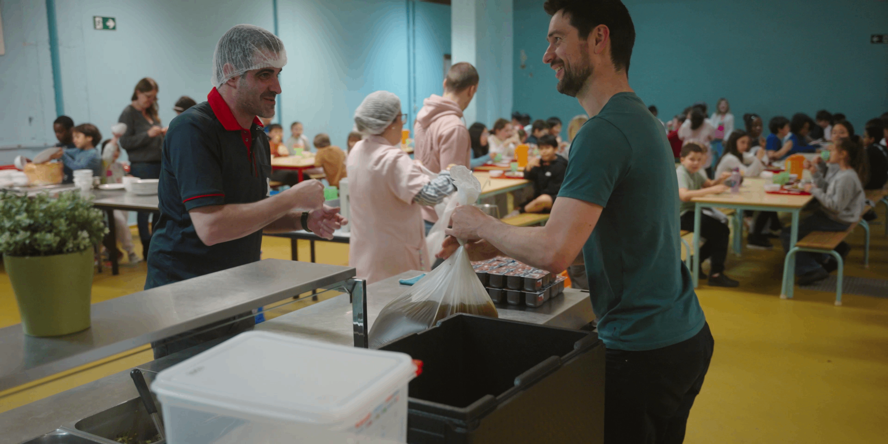
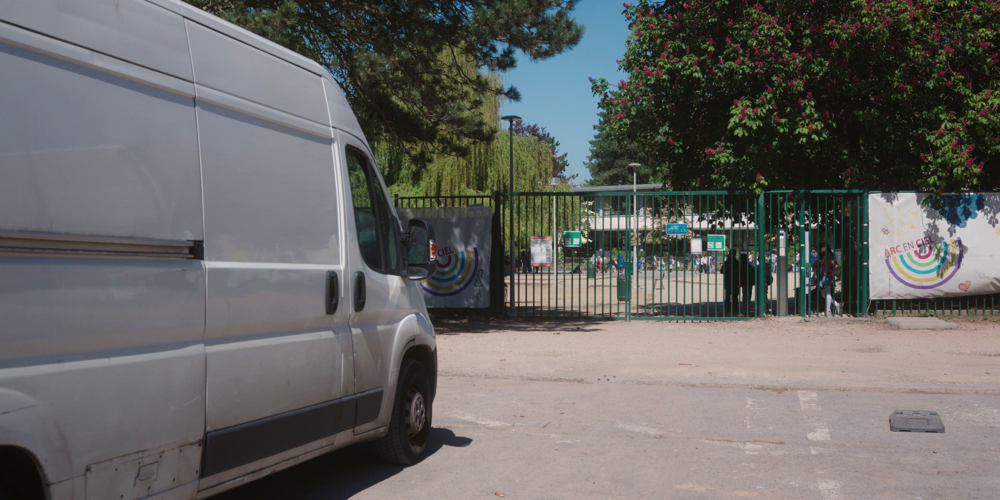
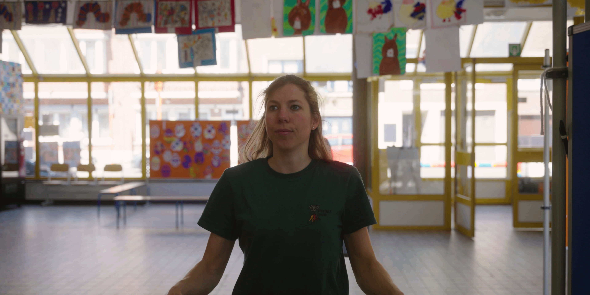
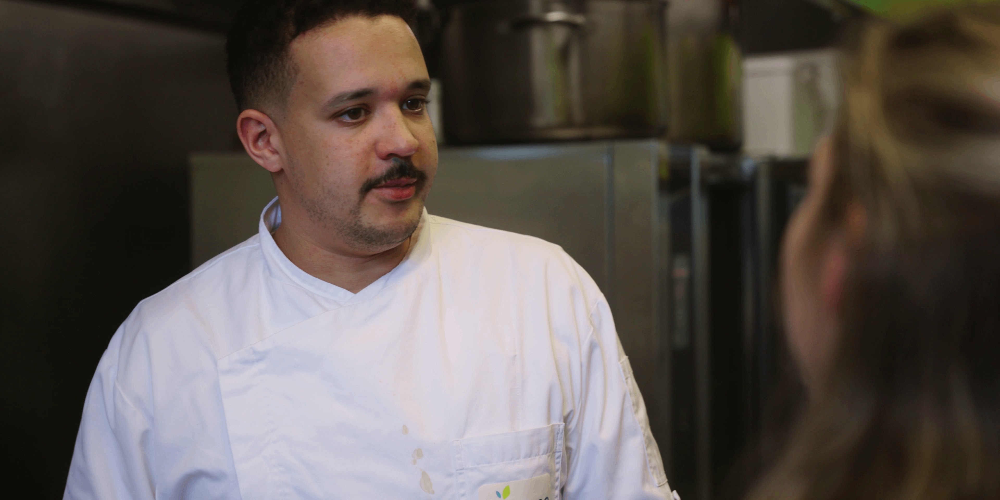
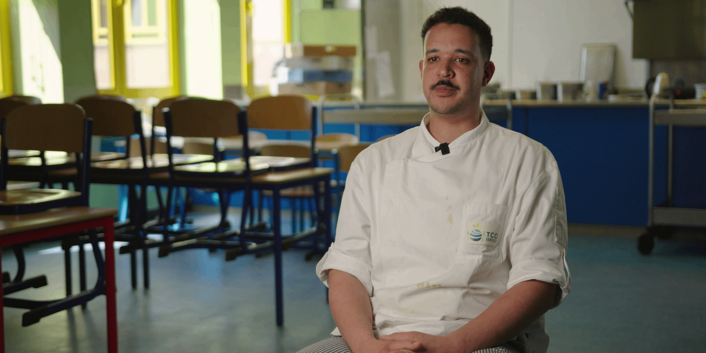
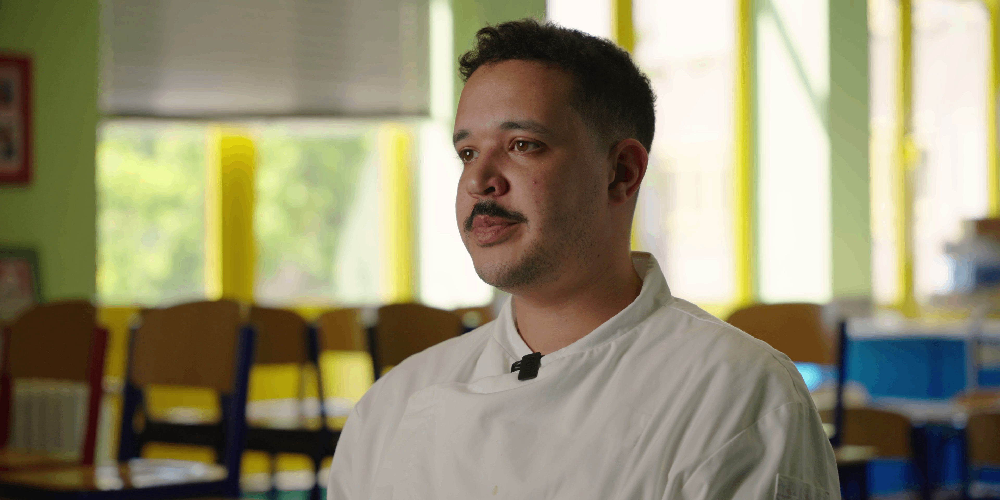
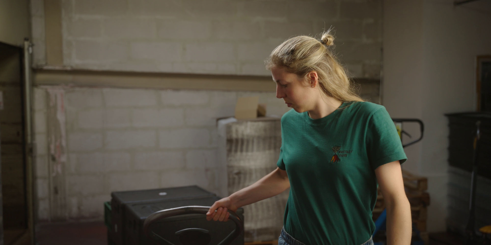
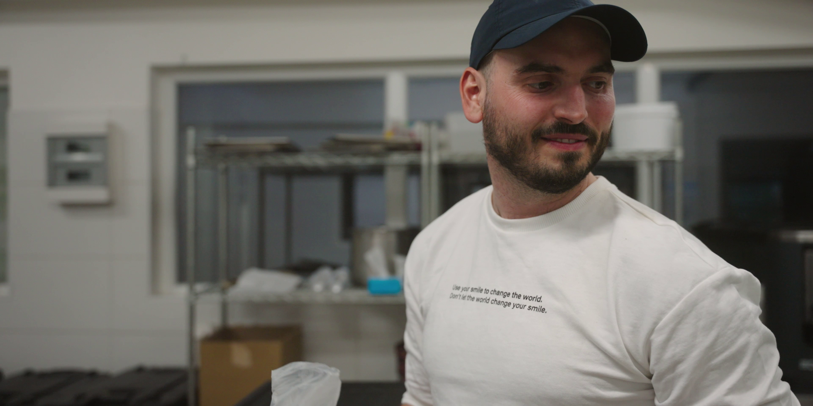
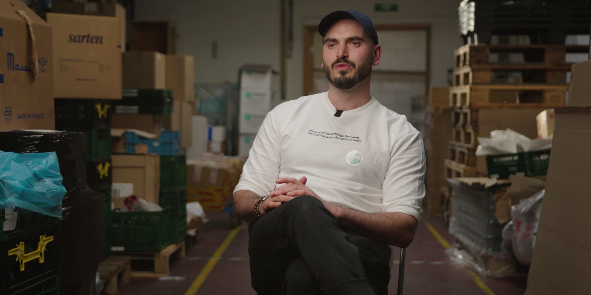
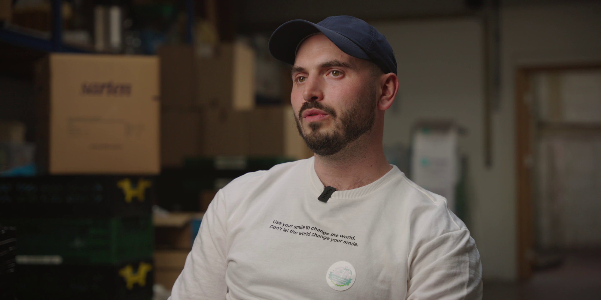
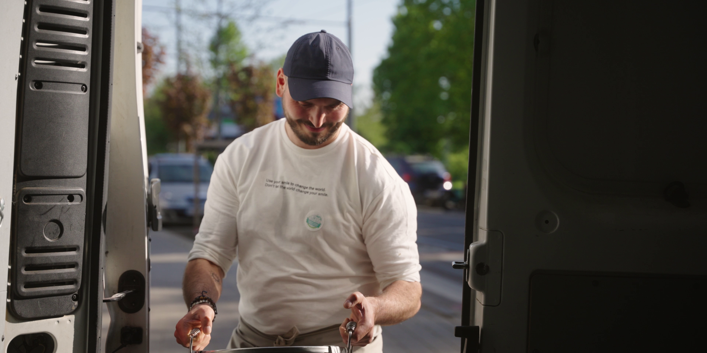
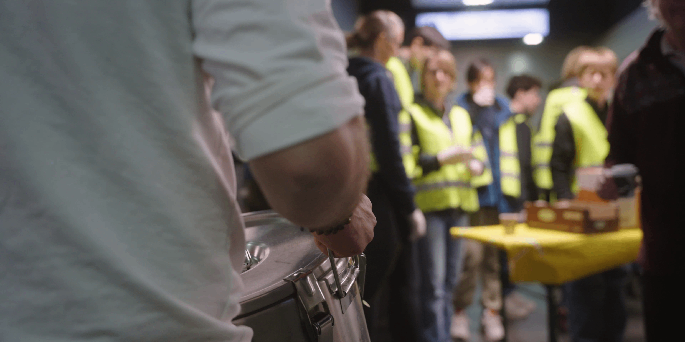